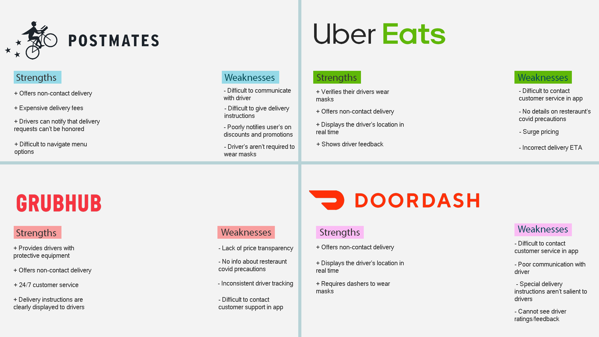

Throughout the Covid-19 pandemic, Doordash has seen its business booming, as many have turned to food delivery services to reduce the number of people they'd come in contact with normally. During the pandemic, communication between users and their dashers is essential, especially for those who have pre-existing conditions that put them at a greater risk for contracting Covid-19. Currently, users are forced to use a text messenger that provides no info about whether or not your message was seen, or even delivered.
The first research method used was a survey that focued on asking about users's experience communicating with their Dasher's through the Doordash app. It also asked basic demographic information such as age and how often they've used the app since lockdown was initiated. The survey was made through Google Forms and sent to Piaza, Snapchat, Instagram, and Facebook.
To get an idea of how often miscommunication issues would occur, I collected Doordash reviews posted in the past 24 hours. For the scope, I chose reviews posted in the last 30 days because they were very recent. The reviews were parsed by looking up key phrases such as "miscommunication", "confusing", "communication", and "wrong order." This was done to not only figure out how often communication issues arised, but also some of the factors surrounding them.
of users have difficulty finding their dasher's contact information.
of users weren't informed about what Covid-19 precautions their dasher was taking.
of users had at least 2 instances of miscommunication between them and their dasher during the pandemic.
of reviews mention that their dasher never received their messages.
Michael
"It's pretty difficult to order food from campus because of how crowded it is. There's this parking lot I'm trying to tell dasher's to meet me at because it's empty and close to where I live. I don't know if my message ever gets sent or received though."
Judy
"I'm immunocompromised and I don't know if my dasher has tested negative for Covid. There's also a lot of traffic near my building, so I need to communicate a specific pickup location with my dasher in order to avoid a long walk to pickup food. But, the messaging never works so I always have to go on a long walk."
Based off my research, I was able to form a few pain points that would fuel the redesign.
For users with pre existing conditions that make them more susceptible to contracting, and experiencing the negative effects of Covid than others, they have no choice but to get their food from delivery services. Hence, miscommunication between dashers and users present needless risks and frustrations during an already stressful time.
In order to analyze the communication issues that are present in, or that aren’t present, in apps similar to Doordash, I analyzed three of its competitors: Postmates, Uber Eats, and Grubhub.
Postmates is the 2nd oldest delivery platform that was analyzed and has been one of the most active communicators during the Covid pandemic. Something Postmates does well that other services lack is the fact that drivers can select, and notify, users in response to their delivery instructions. However, Postmates also suffers from difficulty communicating with their driver as they’re inconsistent with when and how you’re able to contact and give delivery instructions. Users should be able to get some form of feedback when their delivery instructions are read, or when they can’t be followed. Postmates's meaningful feedback should be incororated in communication between users and dashers.
After looking at Postmates, I shifted my sites on Uber Eats. During the pandemic, Uber requires all drivers to verify that they’re wearing a face mask in order to start accepting deliveries. Hence, users know that their driver has been verified as wearing a mask. Uber eats also reveals recent feedback that drivers have received such as their delivery was without hassle, or their delivery was impeded by the driver ignoring delivery instructions. Users should be able to see that their dasher is following Covid-19 protocols and they should also be able to see more information about their dasher.
From Postmates, Grubhub was the next business of analysis. Grubhub makes delivery instructions clear to dashers, as they’re emphasized on the screen before the driver confirms a successful order. On the chance that an order was mistaken, Grubhub offers 24/7 customer support; however, it’s important to note that contacting customer support through the app could be improved. Users should have their messages and delivery instructions more salient to dashers in order for them to be correctly recognized.
I created 2 flows for the 2 different solutions I had in mind to solve existing problems. The first flow was aimed at users and revolves around an interactive, in-app messenger that gives meaningful feedback. It's based off existing messengers such as Facebook Messenger and iMessage because those are well liked and provide feedback when their messages are sent, received, and seen. Also, a pop up screen appears forcing the user to awknowledge that their dasher is on the move and might not be able to reply to their messages. Furthermore, dasher profiles were also added to show basic information about their dasher such as recent reviews.
The second flow focuses on the dashers and aims to fix issues with delivery instructions. Dashers are forced to awknowledge delivery instructions and feedback is sent back to the user when their instructions have been received. If there's a problem, dashers can indicate that instead of ignoring it. Instructions can be flagged by dashers and returned to users for more clarity.
Feedback on flow 1
+ Feedback was meaningful and made users feel like their communication had weight
+ Very simple to use and navigate, clearly took inspiration from other messaging apps
+ Useful to know that the dasher is on the move, so they're probably unable to reply to the message.
- The popup to awknowledge that a dasher is on the move is too overkill, there should be a more subtle way of getting this point across.
Feedback on flow 2
+ Liked how delivery instructions couldn't be ignored, they had to be awknowledged in some way
- Didn't like how users couldn't flag their instructions and it was only left to dashers. Users should be able to mark the importance of delivery instructions for factors such as health or just convenience for the dasher.
- Too ambitious for its own good. It's unclear what the consequences are if a dasher marks that they can fulfill the instructions, but still choose not to. Users expressed concern that this would cause an extended back-and-forth and it would be easier to resolve instruction disputes through the in-app messenger from flow 1.
Looking at the reception of both flows, it was clear that adding a communication system that emphasized feedback was the way to go. Of the four people who were interviewed about both flows, all of them not only preferred flow 1 over flow 2, but also they cited the feedback as a positive in both flows. Flow 1 was hailed as accomplishing its goal in a very clear and simple way, while flow 2 was called far too ambitious and was prone to other problems. One participant even mentioned that they could see flow 2 as something that would cause more problems, than solving existing ones. The overall reception told me that the rest of the redesign should focus on flow 1 and improving on what was already existing.
I believe that I’ve succeeded in my goal of creating a messaging system
that minimizes miscommunication by providing users with detailed
feedback and an interface that resembles the most successful messaging
app platforms. From the user testing, all of the participants
complimented the feedback and found that the knowledge of apps such as
iMessage and Facebook Messenger transferred over to make this messaging
system easy to understand.
With prototype 2, I believe that I have work to do on the implementation
of getting delivery instructions to be acknowledged. From the testing,
it was clear that forcing drivers to acknowledge delivery instructions
was a success; however, the implementation on the dasher’s side
definitely needs a revamp.
Going forward, I intend on focusing on prototype 1, as that got far more positive feedback than prototype 2. The feedback from one participant on prototype 2 basically mirrors my thought process and why I’m choosing not to proceed with it anymore, it’s simply too ambitious. I think that focusing my efforts on something that has the highest chance of success and has received the most positive feedback is the best course of action moving forward. With prototype 1, I’d look to add other aspects to the messenger that would add to what users positively responded to. From my research, they positively responded to the feedback, so emphasizing and improving that would be my priority. Focusing on the feedback, some participants disliked the popup screen and felt that it was too invasive and broke up the simplicity of the flow. As the prototype is improved, figuring out how to deliver feedback that is both meaningful and non-invasive would be key to a successful final prototype.
With the prototype, I changed font weights and colors accordingly
based on the existing Doordash style. Currently, the Doordash app
relies on white backgrounds and black, grey, or red text. Going back
to user's pain points, this prototype seeks to fix them. Dashers and
users are able to communicate in a far easier way than they used to,
as before they were forced to use their phone’s default text messaging
system. The problem with this being that these systems often lack
meaningful feedback and leave the user in the dark. With this
prototype, the user is told when their dasher is on the move and given
meaningful feedback such as when their message has been sent and read.
Furthermore, there's a note at the top of the messenger that lets
users know that if dasher is currently moving and can't reply to their
message. This is done as a refinement for its previous iteration that
users thought was invasive.
When showing the first prototype to the four people who I had for user
testing on the original prototype, they pointed out a few minor
adjustments to improve the prototype. One was the lack of a back
button on the Dasher Profile screen because it was unclear how to
leave the screen. Fixing this only took pasting the back button that
existed in the messenger screens. Additionally,
3 of the 4
participants pointed out that the font size that notified users that
their dasher might be on the move, was far too small compared to the
rest of the screen and hindered readability. On the same note, the
same participants said that the combination of white and red made it
difficult to read the text.
2 of those participants specifically pointed
out the messenger screen where the message sent by the user is white
and wrapped in a red filled background.
2 participants also pointed out that it
would be even more helpful to get more details about the dasher's
location through the in-app messenger. Doing so would save time, so
all they'd have to do is remain on the messenger page instead of going
back and forth. Furthermore,
1 participant touched the highlighted
reviews in the Dasher profile section because they thought it was a
button. To fix this, I eliminated the section completely and shifted
the profile elements accordingly. I was left with a giant white space
at the top of the profile, so I added a section that would specify
when the dasher's last negative Covid test was and an awknowledgement
that they're taking Covid prevention protocols.
Presents relevant info about the dasher to users including their last
negative Covid test, awknowledgement that they're following Covid
protocols, and reviews. This mitigates user concerns about the health
of their dasher and if their dasher is taking proper precautions.
A communication that exists in the app itself, instead of another one.
Communication will become easier to navigate to, as users don't have
to jump outside the app to contact their dasher. Information about
their dasher's information is also displayed, so users don't have to
jump back and forth between sections of the app.
Communication feedback that tells the user when their messages are
sent, received, and read. This builds off successful messaging apps
such as iMessage in order to give users the same positive experience
those apps provide.
I'm very proud of what I was able to do, as this was my first case study. I was able to use tools I hadn't used before such as Figma in order to solve existing problems that users had with Doordash. There's obviously a lot more that I can do to improve, but as a first try I'm proud that I was able to diagnose existing issues and try to solve them. Looking back, I'm shocked that I was able to accomplish as much as I did, especially because I was alone and research was a litle impaired because of the pandemic. Working with design mentors that understood that I was new to this helped a lot, especially during times where I was confused and didn't know what to do. From the steps I took to perform research, to creating user flows, and iterating on a prototype to get it to where I wanted to be, this case study has been incredibly valuable for me. The skills that I've learned here will be with me in wherever my design career decides to take me.